2012/10/14――2012/10/25 西北行纪实
Key Words:
unprofessional photos, improvised route, unforgettable sites, exhausting driving
D1：至西安
一大早就出发，沿着京港澳高速一路到郑州，道路熟识。之后在郑西转入连霍高速，下午到达临潼，加油停车后就去秦始皇陵兵马俑了。景区前奏太长，主题公园的形式虽好却不适合我这种性情急躁的人。眼看天黑了便直奔主题。慕名而来的游客络绎不绝，我想此类景区一年四季绝无淡季之说吧。一到三号坑逐一转完，便很不专业的结束了此处行程。

再向西行数十公里，到达湘子庙已经是傍晚，找一家小吃店。哨子面早已卖完，就听劝要了哨子麻食，形似猫耳朵。
D2：西安
早餐胡辣汤，实乃西安美食给我留下的最令人回味的一次。
为避免晚上回来再寻车位的麻烦，早上乘公交前往雁塔区。门口正建轻轨，后听闻是观光轻轨，于曲江新区绕行约9公里。此时一中年女子上来询问需不需要向导，可以开车沿着轻轨规划线路游览新区景色，只需要20元。遂行。
驾驶员兼导游自称当地农民，新区建设征地之后从事旅游向导谋生。线路沿西安大雁塔北广场东侧至大唐不夜城、唐城墙遗址公园，绕南湖一周后，进入大唐芙蓉园，最后由大唐芙蓉园西侧与大雁塔北广场对接。一圈过后被领入两家玉器厂“参观”。向导直言不讳，进去转一圈就走，不一定非要购物，来此就是为了领取几十块钱的好处。于石雕玉刻不感兴趣，便匆匆出门。向导在行将结束之前还在新区行政办公处领取了一定数量官方的宣传费。于是上车前关于20元导游费为何如此低廉的疑虑消除：即使没有任何讲解和向导服务，这一程的车费都不止20元；而这位农民向导所看重的恰恰也不是这20块从旅客身上获得的报酬，而西安政府对城市形象的树立之重视催生了这些看似并不正式的导游服务，虽不免也烦躁于“进店”的促销手段，然而也得惠于这些非常规的手段，也可以认为是双赢吧。
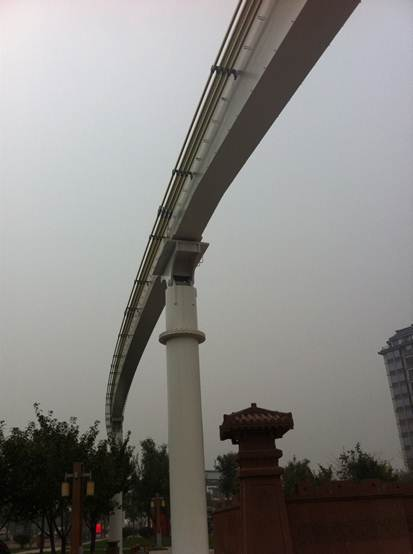
大雁塔前北广场的音乐喷泉，悄悄说其实还比不上安阳市政广场上的喷泉，无论规模还是效果（快来一位朋友支持一下我的说法）。
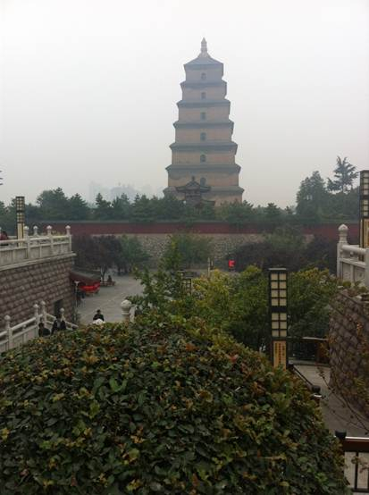
傍晚再回回民街一代，泡馍灌汤包肉夹馍等自然不错过。回到湘子庙青旅，点一杯啤酒边听吧台的服务员mm与外国友人唠嗑，nothing but snacks.
D3: 西安至西宁
早上细雨蒙蒙，天还不亮就出发，因为当天近1000公里，几乎全部耗在路上了。小插曲是，在进入兰州的时候不慎被导航领下高速进入了市区，所以您看我也是到过兰州的人了。走错了路被老爸训斥，无视禁止掉头的标识直接回高速入口。刚拐弯就被警察叔叔（或者是警察弟弟 = =）拦下来了，我心中一惊：刚耍了个小聪明就被发现了，今天是要走运的节奏。三证一并递上，警察叔叔问了句“上哪儿”便放行。
当晚在西宁宿下且不多说。
D4：西宁至青海湖至张掖
早上吃罢早点就动身去青海湖，从湟源县下高速之后一路沿着G109行驶。不到200km的路程，到青海湖南岸，并不买票进景区，而是找景色不错的地方直接驻车观赏。油菜花已经败落，当地人围起一片尚未完全凋零的园子供游客欣赏；跟看门人谈好价格，直接开车从公路上下去到湖边拍照。游客不多，遇到豫字牌照的两辆商务车，倍感亲切。
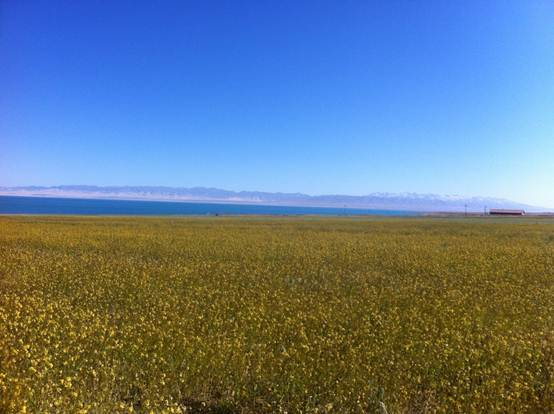
看看时间尚在午间，没有计划在这个季节去鸟岛，又不想坐等一天看日出，便索性掉头去张掖方向。大致浏览了下地图，从西宁到张掖不到500km，尚可忍受，便先走回头路。不想一路向北要跨越祁连山脉，哪有高速可走（当然也可以绕道兰州再走G30，近700公里，适合腰好背好腿脚好的司机）。
事实证明，国道上总有看不完的景色，而封闭高速公路就不堪了。最高海拔在3800m左右，坡度大的路段对于1.6排量来说有点吃不消，油门踩到底之后只听发动机的声音犹如一头被缰绳束缚的老牛。就低档龟速前行吧，上坡动力不足，下坡刹车片磨损。付出代价了总要有点补偿吧，补偿就是一路静谧与风光。
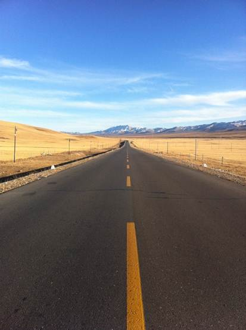
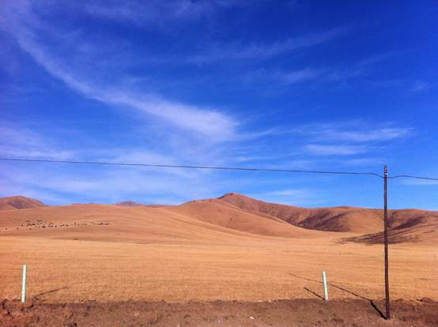
傍晚时分行车是要尤为注意安全的。到达张掖，宿在国道入口，还好城市不大，步行去吃了驴肉黄面，或是疲惫饥饿，我一个人吃了两份，呃。
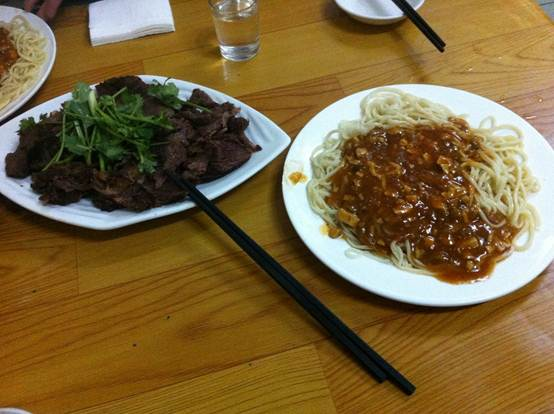
D5：张掖――黑河湿地国家自然保护区――临泽县丹霞国家地质公园
BTW，张掖市区有一个湿地公园，不过仅仅是一个公园而已。这个公园的价值就是，让我们遇到了一位早餐后散步的大爷，大爷给我们指明了保护区的位置，实际上是在G312上。庆幸的是，此路便通往旅途的下一站。
栈道，芦苇荡，潺潺流水，便是这一片湿地的主角了。
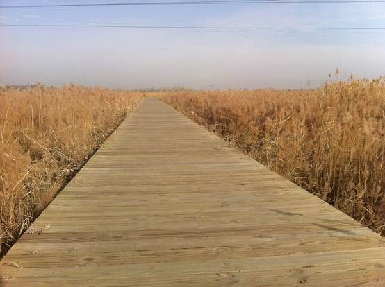
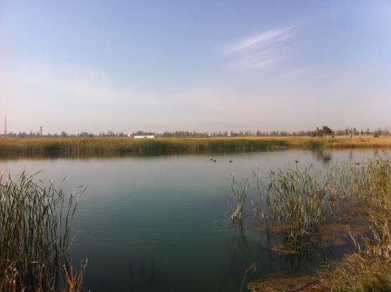
一个小插曲。张掖电视台采访，这个季节几乎是没有游客的。我便被
拉过去，被问到“湿地保护区是不是与你想象的有较大差距？会不会令人失望？”。还好我很乐观，因为偌大一个保护区几乎就是为我们一行专门开放的，鸟儿不多
却也听得见鸟鸣，水量不大却也闻得到湿润，芦苇枯黄却也是秋天的颜色，何求再多。
从市区出来，被可爱的导航小姐引上了一条村间小路。其实一开始这路是不敢走的，毕竟连县道都够不上，且除了驴车之外并不见人。而后事实又证明，这乡间小路的景色是我心目中的“6A”级。
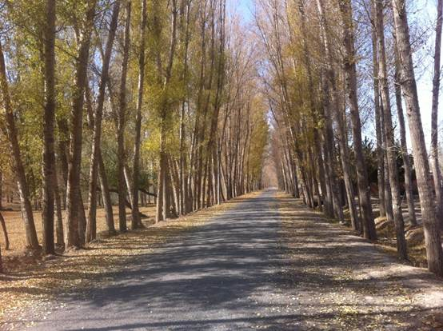
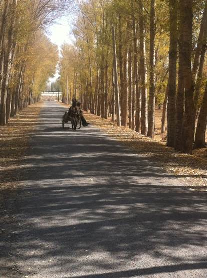
张掖市区前往南台子的道路修的真心好，沥青的味道似乎还有残留，看来是为迎接国庆的大批游客方才修建的。到“丹霞老雷家”住下，小憩后便趁着夕阳前的一段时间前往丹霞国家地质公园。园内乘坐观光车，停靠几个主要站点，张艺谋耗资60多万的面馆已经破败了且不管它，今天的主题是大自然的彩绘。毋庸赘言，有图为证。
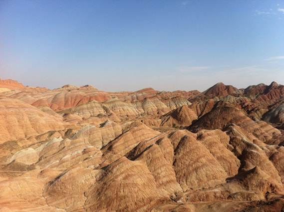
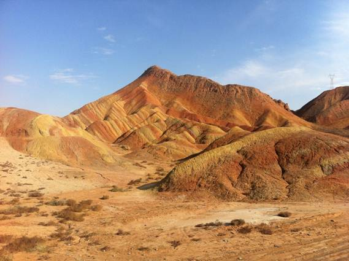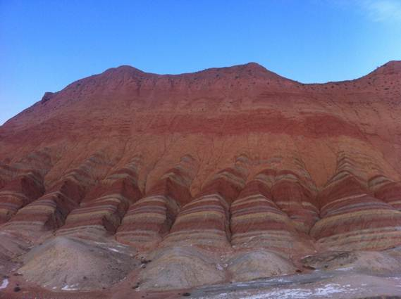
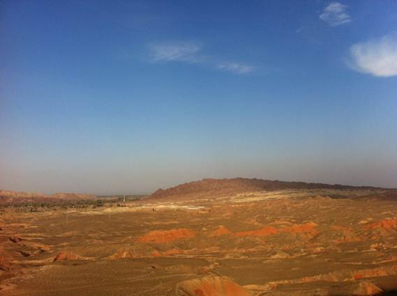
晚上在“老雷家”遇到一对合肥的老夫妇，儿女为他们选好了路线故前来一游，老人说道肃南丹霞值得在凌晨一去，一览日出胜景。遂调整行程，当夜早睡。
D6：南台子村到肃南丹霞（冰沟）
凌
晨到达，这是一处名气和硬件都不及张掖丹霞的公园，色彩被放到了一边，专心欣赏其形态。早上气温很低，裹上所有的衣服，爬上并无保护设施的山包，等待日出
的时候与几位朋友聊天。其中一位广州的哥们儿谈及他随后的京广线骑行计划，心生羡慕。前山颇高，等了许久才看到阳光，金碧辉煌。远处雪山亦收眼底。
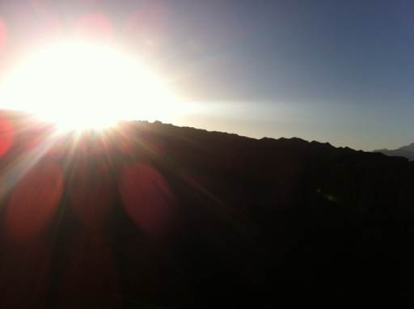
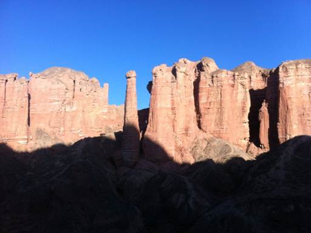
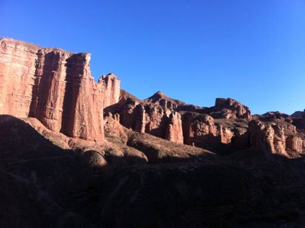
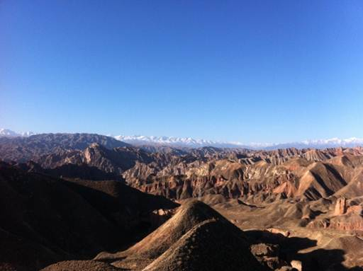
送罢那对老夫妇，我们动身前往敦煌。高速到瓜州便向西北延伸，走S314一百多公里，到敦煌大动脉阳关中路上住下，无论去莫高窟还是鸣沙山都方便。
D7: 敦煌
早上起来先去莫高窟，进入敦煌的这个收费站一共收了我们4次过路费，数量不多但令人抓狂。莫高窟名不副实，如果有下次机会我依然愿意再去。

下午在鸣沙山玩沙，就当游戏了。月牙泉点缀在沙漠之中，确实令人震撼。而更为有点缀效果的，我想应该是游客们艳丽的鞋套吧。
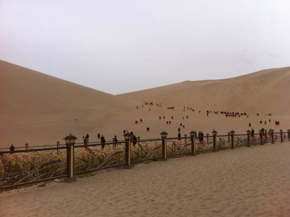
D8： 敦煌到嘉峪关到酒泉
惜别敦煌，原路向酒泉方向。对了，瓜州上高速前有一片路摊，各种瓜果琳琅满目，就是为了证明这个面积比北京总面积还要大上0.5倍的西北大县的名字可不是信手拈来的。
不太走运的是，上高速不多久便爆胎了。走运的是，车流量较少。 “还好是后胎，方向偏的不是很厉害”，老爸如是说。七手八脚把备胎换上，到了嘉峪关市区找补胎的作坊，无奈多是为大车服务的。费了一番周折，看到一家普林斯通，检测后发现胎已经被炸坏，遂买了一个新胎以防万一。
若说这一行比较无趣的行程，当属嘉峪关这一天。天下第一墩(讨赖河谷)，关城以及悬臂长城这些人为痕迹太多。看看就好，且看且行。
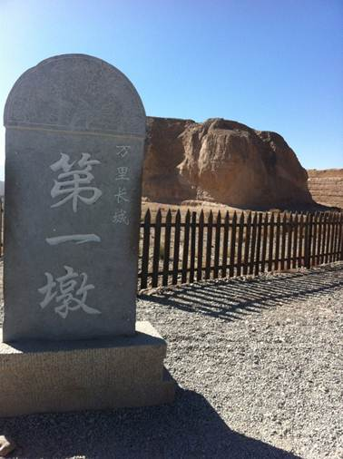
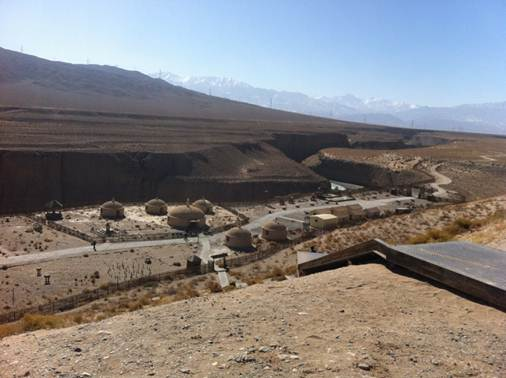
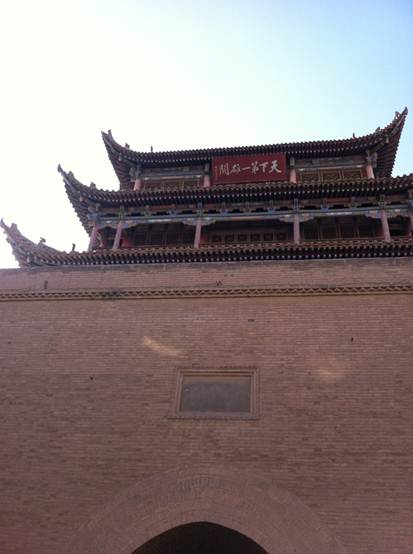
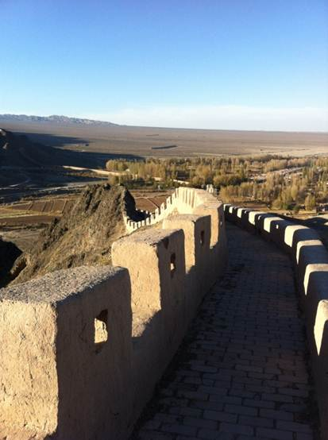
当晚住在酒泉市，距离嘉峪关30公里，便于后面的行程。吃了羊肉焖饼子，味道不俗。原来这边的“饼子”就是面片，“馍”才是平常认为的饼子。

D9：酒泉到额济纳
距
离相对并不长，虽不是高速但路况较好。途径东风航天城，军车较多。十号基地附近空旷辽阔，几座形似发射塔的建筑，但距离太远并不能看清。中午到了额济纳
旗，饭馆中都空无一人，以为过了饭点。老爸坚决不进这些没有人的餐馆，在城区转了几圈找到一家面馆饱肚。下午便去胡杨林景区了。
游客很少，景区大门要不就是紧锁，要不就是无人看管。事实上沿着S312上行，沿途均是胡杨风光，选了几处景色不错却不是景区的地点，停车拍照。也有河北唐山的朋友开一辆SUV进入起伏的荒漠里，比我们这小破车舒服多了。毫无疑问的是，多数胡杨都已落叶，盘龙卧虬，极尽沧桑之感。夕阳之下，黄沙扬起，这些“活三千年不死，死三千年不倒，倒三千年不腐”的精灵便也神气逼人。
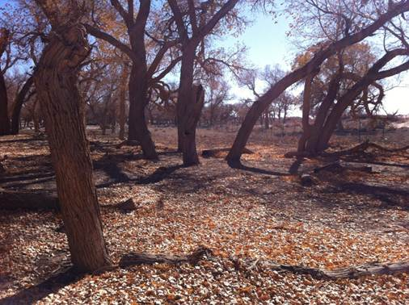
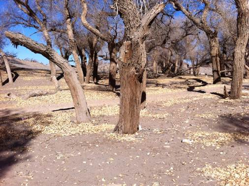
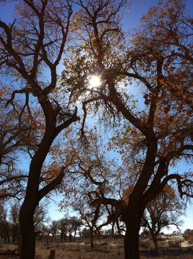
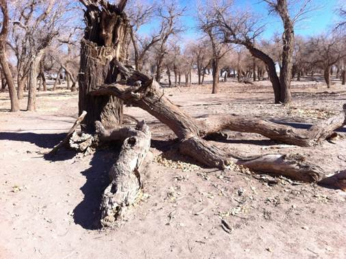
D10: 额济纳至中卫
前一天晚上研究路线，决定去阿拉善左旗，可以的话就直奔中卫了。于是早起，路过时又进入一处胡杨林景区，已没有人售票，进去拍了朝阳下的胡杨，另一番风味。
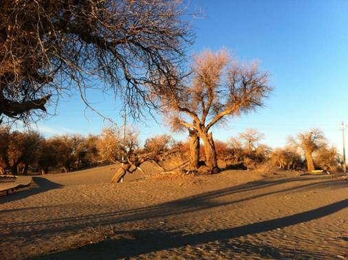
一路省道路况一般但是大车不多。茫茫戈壁，几百公里不见人影。道路测速全靠一张纸质的测速单，没经过一个检查站就记录一个时间，超速罚时。晚霞不孤单，陪伴它的是起伏的沙丘。
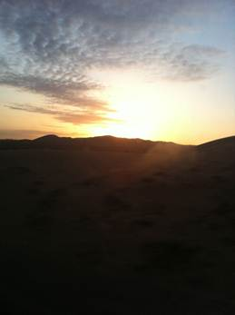
天黑前到了中卫，住在市中心便去觅食。只记得一个中卫凉皮的菜，其他也无特色。不过路上确实累了，吃的很香很满足。
D11: 中卫
腾格里湿地和沙坡头。
湿地公园已经鲜有游客。票价似乎是每人60。真是淡季了，售票处原本没有人，后来有值班人员过来，建议我们开车进去，一共交了30元。园内的确不小，有别墅区作为度假村。周边景色如诗画般，更因为没有游人乱入而保护的很好。
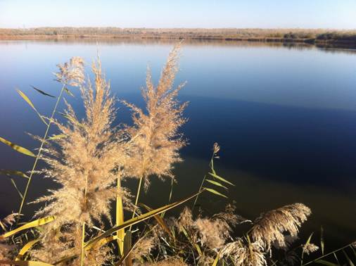
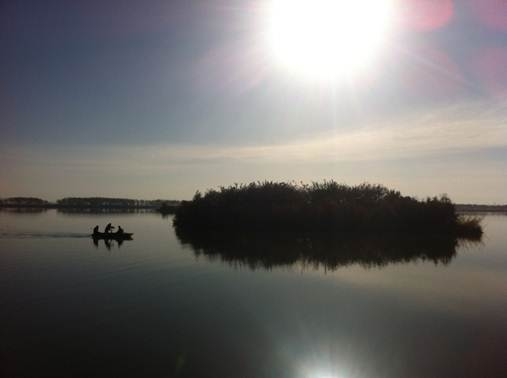

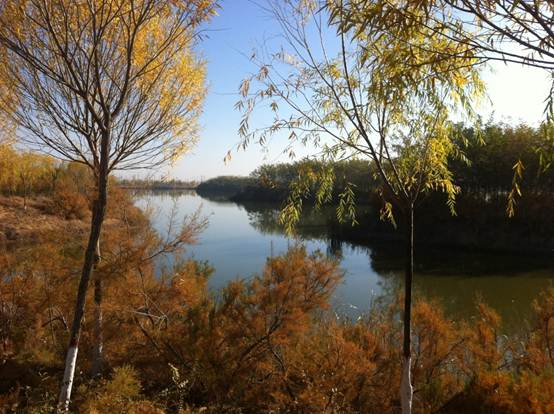
沙坡头沙漠和黄河景区就更像是一个游乐场了，除了不菲的门票之外内部还有很多项目可供游玩。
黄河一弯被这漫天迷雾笼罩，黄沙绿树点缀在两翼，颇有烟波浩渺之势。
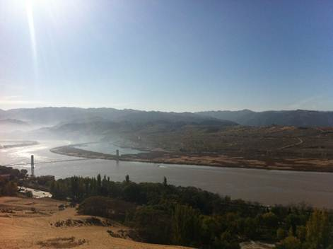
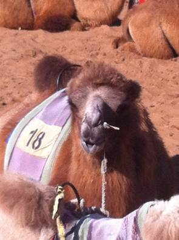
腾格里沙漠便更纯粹了，可以一路向北走入内蒙古境内，好好被这大漠蹂躏一番。要知道，在沙漠中徒步的人就不如那一只黑色爬虫悠然了――足迹清晰整洁，不似人类的狼狈吧。
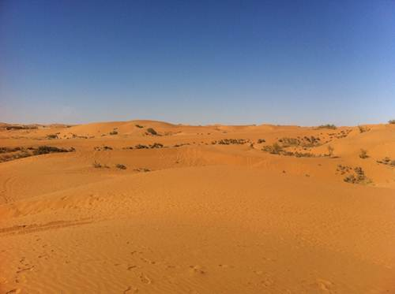
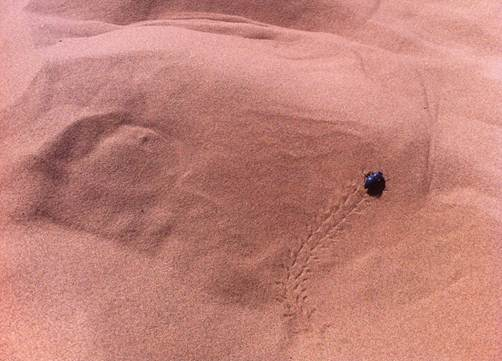
D12： 中卫到吕梁
返
回路上，一直在赶路。傍晚时候堵在山西和陕西省界，货运大车几乎停滞在内道，小车在外道一步一停。教训是，青银高速子洲县到柳林县之间傍晚之后大车陡然增
多，堵车常有。为何做出如此判断？因为堵车发生几分钟后就有当地人挎着篮子上到高速来兜售泡面，实在是对这种情况太熟悉且早有准备。
到了山西怎能不吃面食。晚餐就是砂锅面了，缺水之后真是对鲜汤更加厚爱。
D13：吕梁到安阳
路线是经由太原走两广高速到长治，绕行邯郸回安阳。顺便赞叹下我国高速公路的日臻发达。
所有照片均为手机拍摄。
附：行程路线
安阳到西安 650km
安阳市――京港澳高速――连霍高速――西安市

西安到西宁 910km
西安市――连霍高速公路――青兰高速公路――京藏高速公路――西宁市
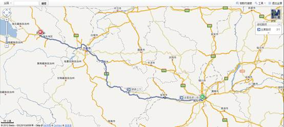
西宁到青海湖 170km
西宁市――京藏高速公路――西湟高速公路――国道G109到终点（海南藏族自治州）
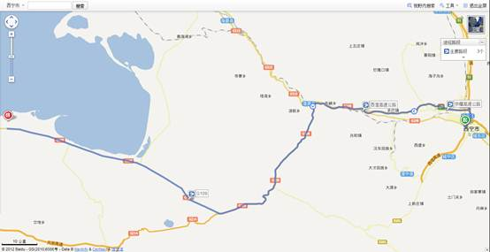
青海湖到张掖480km
国道G109――国道G227（翻越祁连山脉）――张掖市
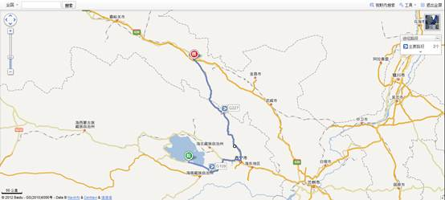
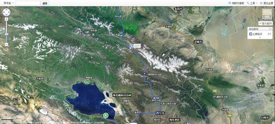
张掖市到临泽县南台子村45km
省道S213
临泽县南台子村到敦煌 600km
南台子村――临泽县――连霍高速公路――由瓜州进入省道S314到敦煌
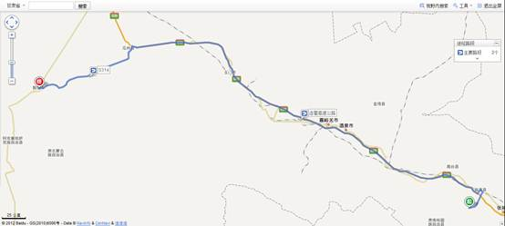
敦煌市到酒泉市 400km
敦煌市――省道S314――连霍高速公路――嘉峪关市――酒泉市
酒泉市到额济纳 380km
酒泉市――省道S214――航天路――省道S315――额济纳旗
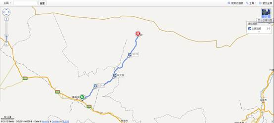
额济纳到左旗到中卫市 940km
额济纳――省道S312――省道S218――巴银高速公路――京藏高速公路――中卫市
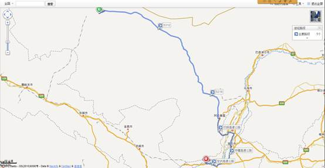
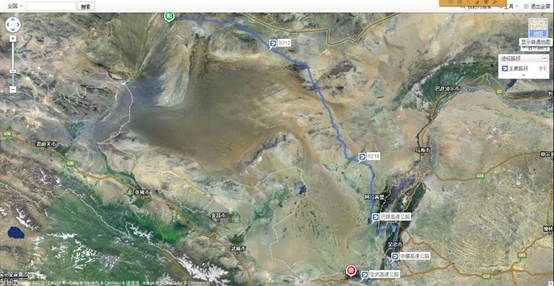
中卫到吕梁 600km
中卫市――定武高速公路――青银高速公路――吕梁市
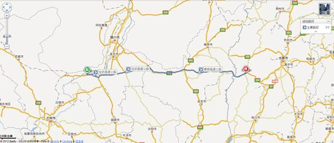
吕梁到安阳 620km
吕梁市――青银高速公路――京昆高速公路――二广高速公路――青兰高速公路――京港澳高速公路――安阳市
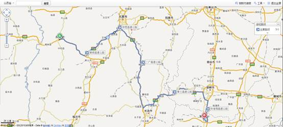
理论上约5795km，由于计算市内交通、其他损耗和误差，实际总里程大于5900km。
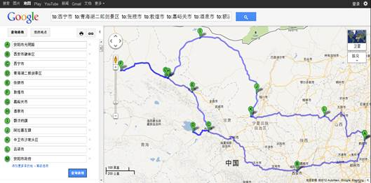